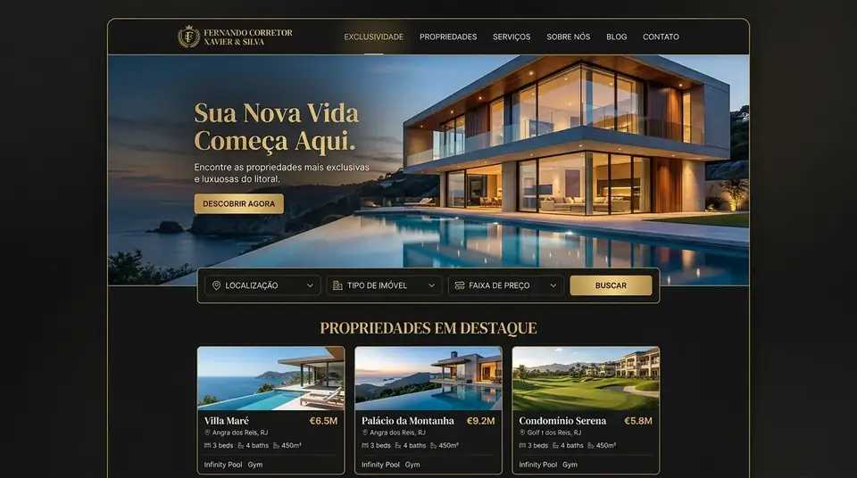
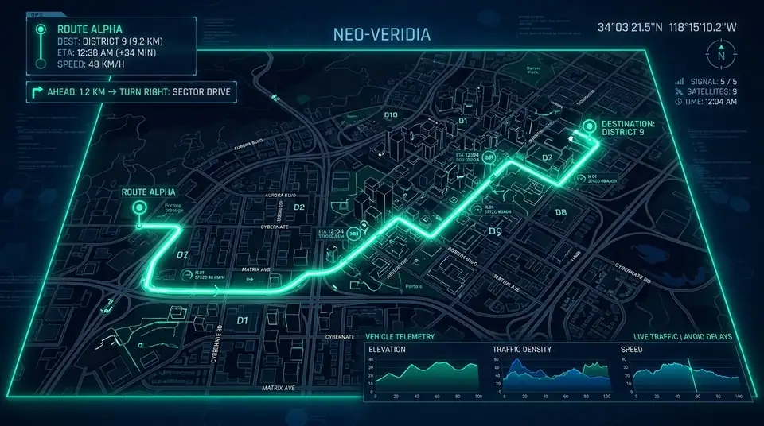

SEU NEGÓCIO MERECE SER VISTO. E ENCONTRADO.
Sites, Landing Pages e presença no Google para colocar sua empresa diante das pessoas certas.
ENQUANTO VOCÊ PENSA NISSO, SEU CONCORRENTE JÁ ESTÁ NO TOPO DA BUSCA.
Construímos a presença digital que faz sua empresa ser encontrada, percebida e escolhida.
GOOGLE BUSINESS PROFILE
Mais visibilidade local. Mais ligações diárias. Mais oportunidades reais de vendas exatamente no momento de decisão do cliente.
SITES & LANDING PAGES DE ALTO PADRÃO
Experiências digitais que apresentam a autoridade da sua empresa e transformam visitantes anônimos em contatos qualificados no WhatsApp.
QUANDO ALGUÉM PROCURA. SUA EMPRESA PRECISA APARECER.
Otimizamos sua presença no Google para que sua empresa seja encontrada pelas pessoas certas, no momento em que elas estão procurando.
NÃO É SÓ UM SITE. É A PRIMEIRA IMPRESSÃO DO SEU NEGÓCIO.
Sites estratégicos, ultra rápidos e visualmente marcantes, desenvolvidos para apresentar sua empresa com máxima autoridade, gerar confiança imediata e transformar visitantes em oportunidades reais.
ENQUANTO VOCÊ NÃO É ENCONTRADO, ALGUÉM ESTÁ SENDO ESCOLHIDO.
Seu cliente já está pesquisando. A diferença está em quem aparece, transmite confiança e facilita o próximo passo.
NÃO APARECE.
Seu cliente procura pelo seu serviço agora, mas está encontrando (e ligando para) o seu concorrente.
NÃO CONVENCE.
Um site amador ou desatualizado destrói sua credibilidade instantaneamente, afastando clientes qualificados.
NÃO CONVERTE.
Mesmo quando encontra sua empresa, o cliente precisa de um próximo passo claro.
DO PRIMEIRO CLIQUE AO PRÓXIMO CLIENTE.
Uma estratégia construída para conectar descoberta, percepção e conversão em uma única experiência digital.
DESCOBRIR
Entendemos o negócio, o público e o posicionamento antes de construir.
POSICIONAR
Estruturamos a presença digital para que a empresa seja encontrada e percebida.
CONSTRUIR
Criamos experiências digitais que representam o valor real da marca.
CRESCER
Transformamos presença em oportunidades e criamos uma base para evolução.
DESCOBRIR
Entendemos o negócio, o público e o posicionamento antes de construir.
POSICIONAR
Estruturamos a presença digital para que a empresa seja encontrada e percebida.
CONSTRUIR
Criamos experiências digitais que representam o valor real da marca.
CRESCER
Transformamos presença em oportunidades e criamos uma base para evolução.
PRESENÇA DIGITAL QUE FAZ SUA MARCA SER PERCEBIDA.
Experiências digitais projetadas para empresas que querem parecer tão profissionais quanto realmente são.

FERNANDO CORRETOR — IMÓVEIS DE LUXO
Website imobiliário de alto padrão desenvolvido com arquitetura cinematográfica, carregamento instantâneo e máxima autoridade visual.

Presença que gera ligações, rotas e clientes todos os dias.
SEO LOCAL & GOOGLE BUSINESS PROFILE DE ALTA PERFORMANCE
Estruturação completa de SEO local, palavras-chave comerciais e autoridade para sua empresa ser a primeira opção encontrada no Google e no Maps.
CONFIANÇA SE CONSTRÓI ANTES DO PRIMEIRO CONTATO.
Otimizamos sua presença no Google para aumentar sua visibilidade local e transformar buscas em oportunidades reais.
Mais presença diante de quem procura.
Posicionamento de autoridade nas buscas por geolocalização e intenção imediata de compra.
Informações e apresentação profissional para fortalecer a decisão.
Avaliações 5.0, catálogo verificado e dados precisos para eliminar dúvidas do cliente.
Mais caminhos para transformar descoberta em contato.
Rotas rápidas de GPS, botões de ligação e links diretos para WhatsApp e site oficial.
SER ENCONTRADO É O COMEÇO. SER ESCOLHIDO É O OBJETIVO.
Criamos uma presença digital pensada para conduzir pessoas da descoberta ao próximo passo.
Alguém procura.
O potencial cliente pesquisa por um serviço ou produto com necessidade imediata na região.
Encontra sua empresa.
Sua marca surge em posição de destaque, capturando o olhar no momento exato do interesse.
Percebe valor.
Apresentação impecável, autoridade visual e clareza de proposta eliminam qualquer hesitação.
Entra em contato.
O interesse se transforma em mensagem, chamada ou solicitação de orçamento imediata.
Vamos construir a presença digital que sua empresa merece.
Estamos abrindo espaço para os primeiros clientes fundadores — atenção total ao seu projeto, sem fila de espera.
SEU PRÓXIMO CLIENTE PODE ESTAR PROCURANDO AGORA.
Clique abaixo para conversarmos pelo WhatsApp. Vamos analisar sua presença atual e traçar uma estratégia exclusiva para o seu negócio.